ชื่อเควส :
ชื่อ NPC : Chief Mahnsoo
พิกัดจุด NPC เริ่มเควส : alberta_in.gat
ประเภท : เควสเปลี่ยนอาชีพ
สิ่งที่ได้รับจากเควส : เปลี่ยนอาชีพ Merchant
เงื่อนไขในการทำเควส :
วิธีการทำเควส : ให้ไปที่เมือง Alberta พิกัด 37 41 และเข้าวาร์ปไปข้างใน
เมื่อเข้ามาแล้วให้คุยกับ NPC ที่ชื่อว่า Merchant และให้เลือกตอบ "ต้องการเป็น Merchant"
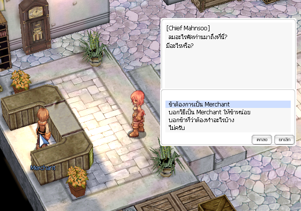
จากนั้นเขาจะบอกรหัสสินค้า และสุ่มให้เราไปส่งสินค้าเพียงที่เดียวเท่านั้น จากทั้งหมด 4 ที่
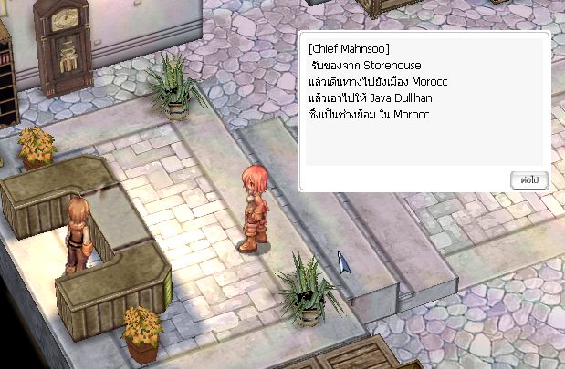 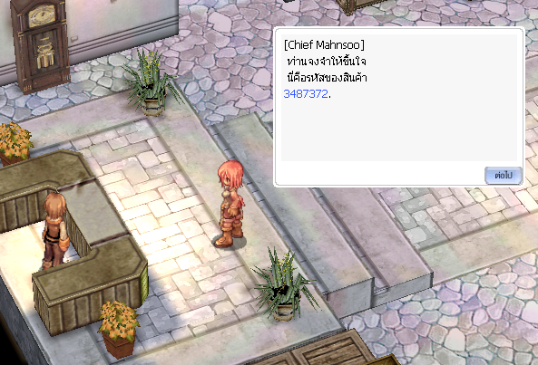
เข้าไปคุยกับ NPC Merchant Guildsman เค้าจะบอกสถานที่ที่เราต้องไปส่งสินค้า และให้เราใส่รหัสสินค้าที่ได้มาจาก NPC คนแรก
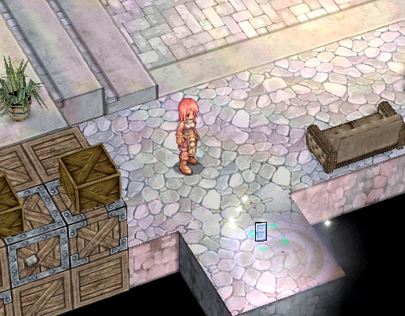
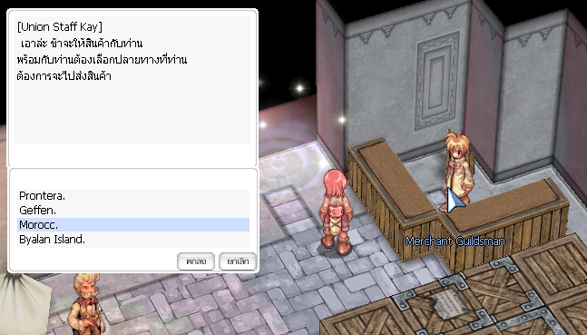 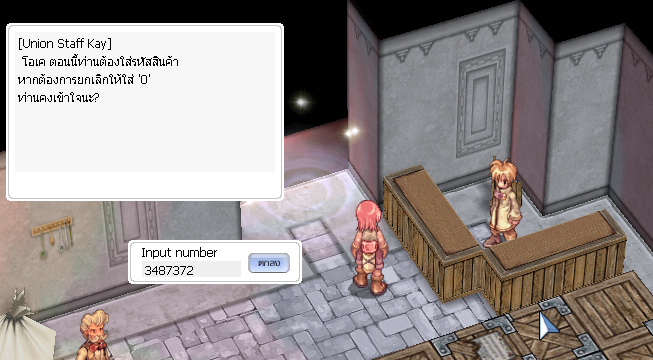
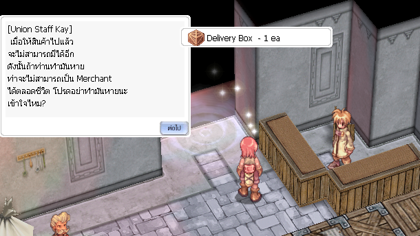
สถานที่ส่งสินค้าแบบที่ 1 เมือง Prontera จะอยู่บริเวณ มุมขวาล่างของเมือง พิกัด 248 42
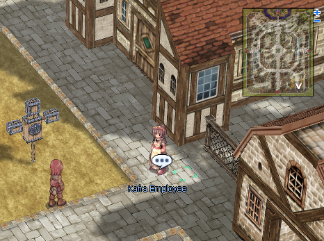
สถานที่ส่งสินค้าแบบที่ 2 เมือง Geffen จะอยู่บริเวณ มุมซ้ายบนของเมือง พิกัดหน้าวาร์ป 65 177
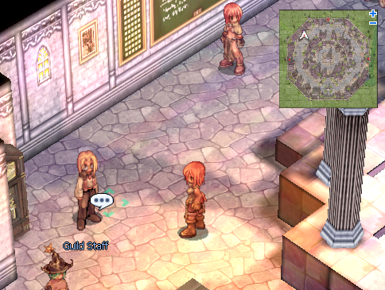
สถานที่ส่งสินค้าแบบที่ 3 เกาะ Byalan สามารถนั่งเรือจากเมือง Izude ไปได้ ถ้าเราต้องมาส่งของที่นี่ NPC ตัวแรกจะฝากจดหมายมาให้กับ Kafra ด้วยและเมื่อส่งจดหมายแล้ว จะได้รับค่าตอบแทนจำนวน 200 zeny
สถานที่ส่งสินค้าแบบที่ 4 เมือง Morroc จะอยู่บริเวณโรงแรมมุมขวาบนของเมือง พิกัดหน้าวาร์ป 271 269 เมื่อเข้ามาแล้ว ให้เข้าวาร์ปขวาอีกที
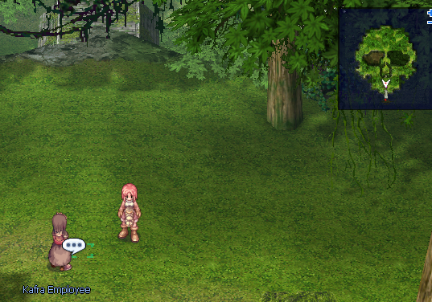
เมื่อส่งสินค้าเรียบร้อย เราจะได้รับใบเสร็จมา 1 ใบ ให้กลับไปที่ Alberta คุยกับ NPC Merchant Guildsman เพื่อส่งใบเสร็จให้

จากนั้นให้กลับมาคุยกับ NPC Merchant อีกทีเขาจะเปลี่ยนอาชีพให้เราทันที
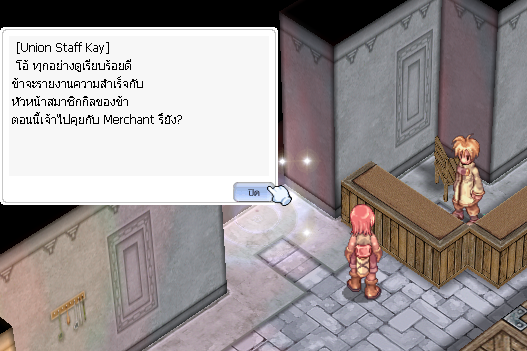
Data Credit:http://www.podzone-ro.com/forum/forum.php?mod=viewthread&tid=3&extra=page%3D1